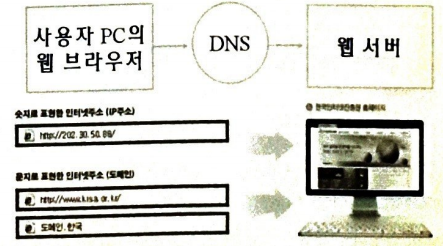
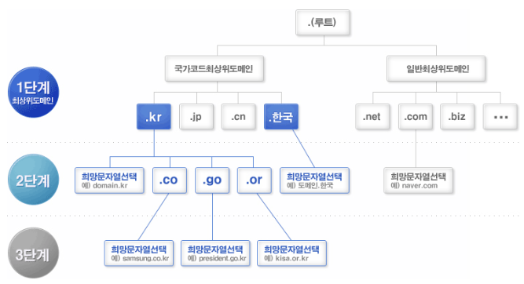

Web Introduce¶
'쉽게 배우는 HTML5 & CSS & JavaScript' 2장 내용
1절. 인터넷과 웹
2절. 인터넷 주소
1절. 인터넷과 웹¶
인터넷¶
-
TCP(Transcission Control Protocol) / IP(Internet Protocol)를 사용하는 전 세계에서 가장 큰 통신망
-
세계 최대 통신망
-
망 중의 망(Network of network)
TCP¶
-
전송 제어 프로토콜
-
IP 위에서 동작하는 프로토콜
-
데이터 흐름, 오류 조절, 전송할 파일을 패킷으로 나누어 전송
-
수신된 패킷을 원래의 메시지로 조립
-
데이터의 전달 보증
-
데이터 송신 순서대로 수신
-
HTTP, FTP 등 TCP 기반의 애플리케이션 프로토콜들은 IP 위에서 동작
IP¶
-
패킷 통신 방식의 인터넷 프로토콜
-
패킷드이 목적지에 정확히 도달하도록 설정하는 기능
-
패킷 전달 여부를 보증하지 않음
-
패킷을 보낸 순서와 받는 순서가 상이할 경우 존재
인터넷과 웹의 차이점¶
- 인터넷 : 통신망
-
웹 : 인터넷에서 작동하는 서비스
-
즉, 웹은 인터넷상의 정보를 하이퍼텍스트 방식과 멀티미디어 환경에서 검색 가능하게 만드는 정보 검색 서비스
웹 서버와 클라이언트¶
웹 서버¶
-
인터넷을 통해 클라이언트가 요청하는 서비스를 제공하는 서버 컴퓨터
-
"네이버"와 같은 검색 엔진처럼 사용자에게 웹 서비스 제공
-
웹 서버의 소프트웨어 / 하드웨어
| - | 소프트웨어 | 하드웨어 |
|---|---|---|
| 웹 서버 | 웹 브라우저 클라이언트로부터 HTTP 요청 수신 후 반응하는 컴퓨터 프로그램 | 웹 서버 소프트웨어의 언급 기능을 제공하는 컴퓨터 프로그램을 실행하는 컴퓨터 |
클라이언트¶
- 웹 서버 측에 서비스를 요청하는 컴퓨터 또는 사용자
HTTP(HyperText Transfer Protocol)¶
-
인터넷 상에서 웹 서버와 클라이언트 간의 문서 전송을 위한 통신 규약
-
인터넷 상의 하이퍼텍스트(hypertext) 문서 교환을 위해 사용
하이퍼텍스트(HyperText)¶
-
문서 중간에 특정 키워드를 두고 문자나 그림을 상호 유기적으로 결합하여 연결
-
서로 다른 문서라도 하나의 문서처럼 보이면서 참조하기 쉽도록 설정하는 방식
-
인터넷에서 사용되는 웹 문서 형식
-
마우스 클릭 시 다른 페이지나 화면으로 이동 가능
-
EX) 'http://www.naver.com'
- 인터넷 주소인 'www.naver.com'에서 하이퍼텍스트 교환을 http 통신 규약으로 처리한다는 의미
HTML(HyperText Markup Language)¶
-
WWW(World Wide Web : 월드 와이드 웹)에서 하이퍼텍스트 문서를 작성하는 기본 언어
-
하이퍼 텍스트 작성을 위해 개발
-
월드 와이드 웹을 통해 볼 수 있는 웹 페이지를 만들 때 사용하는 프로그래밍 언어
-
확장자 : html, htm
-
HTML 문서 : HTML로 작성된 문서
-
HTML 문서는 웹 브라우저가 해석하여 이용자에게 제공
-
문서 글꼴 크기, 글꼴 색, 글꼴 모양, 그래픽, 문서이동(하이퍼링크) 등을 정의하는 명령어
-
홈페이지를 작성할 경우 사용
-
문서가 별도의 코드(code)를 인식하여 완벽한 하이퍼텍스트를 만들 뿐만 아니라 단어 또는 단문을 인터넷의 다른 장소나 파일로의 연결 가능
tag(태그)¶
-
HTML에서 사용하는 명령어
-
일반적으로 시작과 끝을 표시하는 2개의 쌍으로 구성
Markup Language¶
-
문서(웹 페이지)가 화면에 표시되는 형식을 정의한 언어
-
EX) 헤드라인 1
FTP(File Trasfer Protocol)¶
-
인터넷에서 파일을 주고받기 위해 정한 파일 송수신 프로토콜
-
파일 송수신을 위한 규약
-
웹 호스팅 업체를 통해 호스팅 서비스를 신청한 후 자신이 만든 웹 문서(파일)을 올리기 위해 웹 호스팅 업체의 웹 서버에 접속하여 파일을 올려야 함
-
FTP는 자신의 PC와 상대의 PC(웹 호스팅 업체의 서버) 간에 파일을 주고받을 경우 사용
-
즉, 서로 멀리 떨어진 PC 간에 파일을 주고받을 때 사용하는 인터넷 프로토콜
-
FTP 프로토콜 : 알FTP, WS_FTP, FileZilla, WinSCP 등
웹 호스팅¶
-
컴퓨터의 일부 용량을 할당해 사용이 가능하도록 하는 서비스
-
인터넷 임대 공간 서비스업
-
일정한 공간을 상품별로 나눠 제공
-
웹 페이지 제작 및 데이터베이스 구축 가능
-
OS 및 서비스에 따라 Linux 호스팅, Windows 호스팅, 닷넷 호스팅 등으로 구분
-
리눅스, 유닉스, 윈도우 호스팅 등은 그 서버의 운영체제에 따라 구분되며 사용자는 자신이 원하는 서버를 선택한 후 호스팅 신청 가능
-
어떤 운영체제를 선택하는지에 따라 서버가 상이
-
기본 서비스 : DB(MySQL), SSH, PHP, CGI, phpMyAdmin, PERL 등
2절. 인터넷 주소¶
URL(Uniform Resource Locator)¶
-
인터넷에서 작동하는 웹에서 자원(리소스)을 찾는 방법 제공
-
자원에 엑세스하는 데 사용되는 프로토콜의 이름과 자원의 이름 포함
-
첫 번째 부분은 사용할 프로토콜 식별
-
두 번째 부분은 자원이 있는 IP 주소 또는 도메인 이름 식별
-
URL 프로토콜
-
웹 자원
- HTTP(HyperText Transfer Protocol)
- HTTPS(HTTP Secure)
-
전자 메일 주소
- "mailto"
- FTP(File Transfer Protocol)
-
서버의 파일
- "ftp"
- 원격 컴퓨터에 엑세스하기 위한 세션의 텔넷
-
자원 이름
-
서버 또는 웹 서비스를 식별하는 IP 주소 또는 도메인 이름
-
프로그램 이름 또는 서버의 파일 경로와 이메일 주소
-
웹 사이트 주소뿐만 아니라 컴퓨터 네트워크 상의 자원을 모두 표현 가능
-
EX) URL
- https://github.com/BangYunseo
- ftp://github.com/BangYunseo
- mailto:yunseobang33@gmail.com
도메인과 IP 주소¶
-
컴퓨터와 통신하기 위해 존재하는 고유한 주소 체계
-
IP 주소
-
숫자로 표현된 주소
-
ex) 218.145.31.135
-
도메인
-
문자로 표현된 주소
- ex) www.google.com
IP 주소¶
IPv4¶
-
32비트(4바이트)의 version4(IPv4)
-
일반적으로 도트(.)로 구분되며 4단계로 표시
-
도트로 구분된 각 숫자는 0 ~ 255까지의 숫자 사용
-
숫자로 표현된 주소는 전 세계적으로 중복되지 않음
-
형식 : nnn.nnn.nnn.nnn
- \(0 <= nnn <= 255\)
- n은 십진수
IPv6¶
-
128비트(16바이트)의 version6(IPv6)
-
32비트 IPv4의 주소 부족 현상을 대체하기 위해 주소 길이를 128비트로 늘린 새로운 버전
-
형식 : xxxx : xxxx : xxxx : xxxx : xxxx : xxxx : xxxx : xxxx
- x는 16진수이며 4비트
도메인의 사용 이유¶
-
인터넷 사용자들이 다른 컴퓨터와의 통신을 위해 숫자로 표현된 주소만을 사용할 경우 기억하기 어렵고 주소를 이해하기 힘듦
-
숫자로 표현된 주소(컴퓨터의 실제 주소) 대신 문자로 표현된 주소의 사용 보편화
-
즉, 도메인(Domain)의 사용이 보편화
도메인(Domain)¶
-
인터넷에 연결된 전 세계의 어떤 컴퓨터와도 통신 가능
-
도메인의 이름은 기억, 발음하기 쉽고 문자수가 길지 않음
-
사이트의 성격을 잘 나타낼 수 있는 도메인 사용 가능
DNS(Domain Name Server)¶
-
도메인 이름을 IP 주소로 변경하기 위해 사용
-
특정 컴퓨터 또는 사으트의 주소 탐색을 위해 사람이 이해하기 쉬운 도메인 이름을 숫자 주소인 IP 주소로 변환해주는 역할

도메인 체계¶

NIC(Network Information Center)¶
-
도메인 등록 및 관리하는 곳
-
각 국가 NIC에서 역할 담당
-
만약 국가의 NIC이 없는 경우 미국 NSI에서 관리
-
한국 : KRNIC
-
일본 : JPNIC
-
대표적인 도메인 등록 사이트
-
http://www.mireene.com/
- http://www.gabia.com/
- http://www.dothome.co.kr/
KRNIC(Korea Network Information Center, 한국인터넷정보센터)¶
-
대한민국의 인터넷 발전을 위한 기능 유지와 이용 활성화를 위해 설립된 비영리 기관
-
수행 역할
-
인터넷 주소 관리 체제의 정립
-
주소의 원활한 할당 및 관리
-
인터넷 관련 국익 보호 활동
-
기타 인터넷 이용 촉진을 위한 활동
-
IP 주소 및 도메인 등록서비스의 수행
-
주요 정보 서비스 제공
-
ICANN, APTLD, APNIC 등과의 정보 교환
-
업무협력
-
기술교류